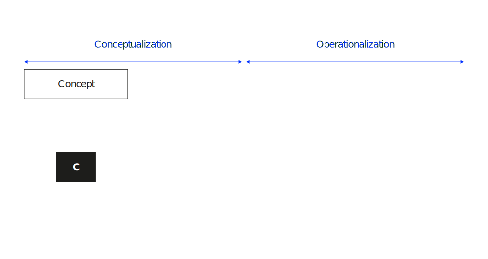
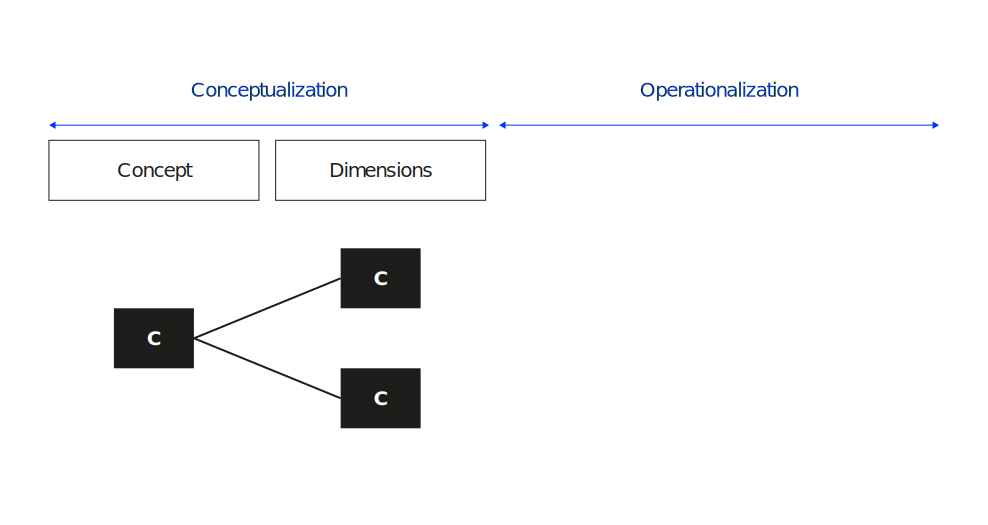
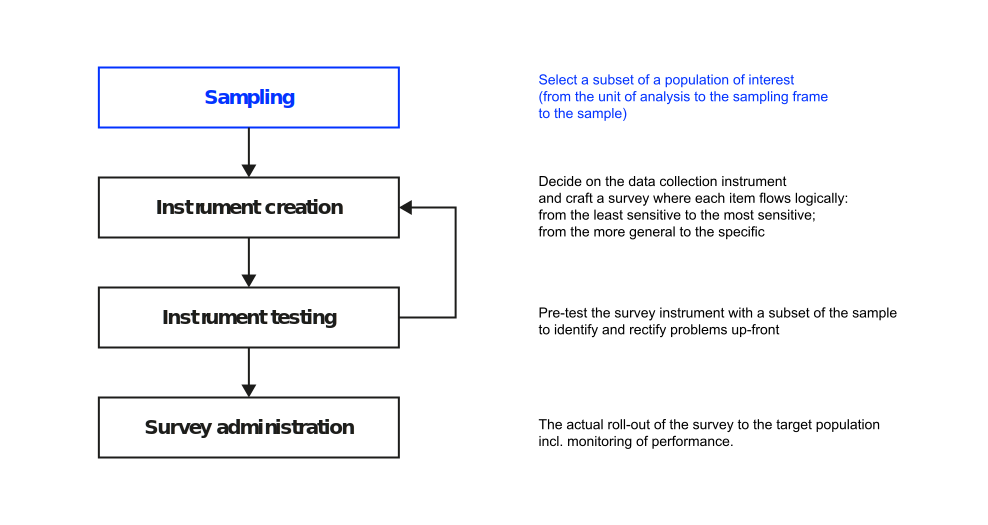
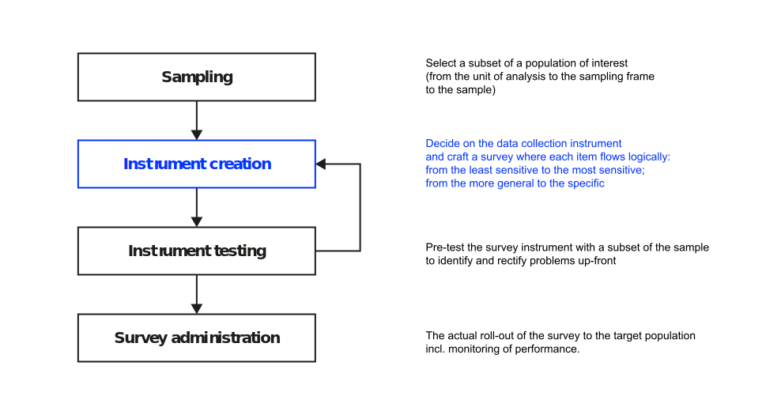
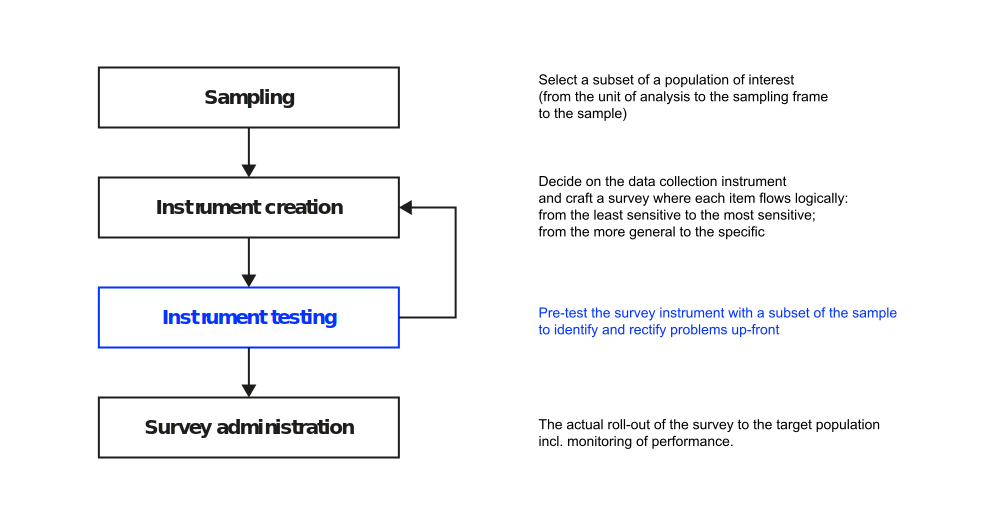
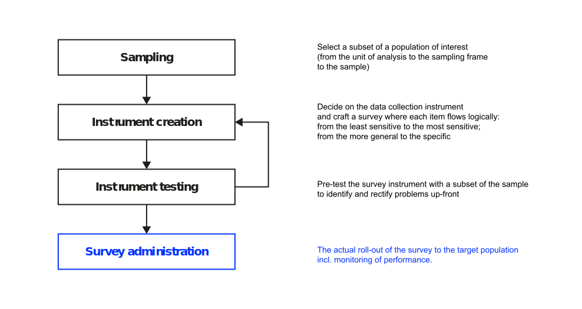

Quantitative methods
Approach phenomena through quantifiable evidence
Neu-Ulm University of Applied Sciences
August 28, 2023
Overview
Methods that are based on the idea that theories can be proposed that can be falsified by comparing theory to carefully collected empirical data.
A focus on numbers, many cases and application of statistical analysis
Process
Overview


Operationalization
Phases and outcomes




Reliability and validity


Examples
| Construct | Definition | Indicators |
|---|---|---|
| Behavioral Intention | Participant’s intentions to use a particular system in the future |
- I intend to use the system in the next - I predict I would use the system in the next - I plan to use the system in the next |
| Attitude towards Behavior | An individual’s positive or negative feelings about performing the target behavior. |
- Using the system is a bad/good idea - Using the system is a foolish/wise idea - I dislike/like the idea of using the system - Using the system is unpleasant/ pleasant |
| Perceived Usefulness | The degree to which a person believes that using a particular system would enhance his or her job performance. |
- Using the system in my job would enable me to accomplish tasks more quickly - Using the system would improve my job performance - Using the system in my job would increase my productivity - Using the system would enhance my effectiveness on the job - Using the system would make it easier to do my job - I would find the system useful in my job |
| Perceived Ease of Use | The degree to which a person believes that using a system would be free of effort. |
- Learning to operate the system would be easy for me - I would find it easy to get the system to do what I want it to do - My interaction with the system would be clear and understandable - I would find the system to be flexible to interact with - It would be easy for me to become skillful at using the system - I would find the system easy to use |
Exercise
We want to find out whether blocking online games on work computers has a noticeable positive effect on work performance.
Key questions:
- What are the constructs?
- What are appropriate measures?
- How do we design the study?
- How can we demonstrate reliability, validity, and causality?
Measurement development
After having developed a conceptual definition of the construct, the first step is to identify and to develop potential items for the construct (Recker 2021).
Because developing and assessing measures and measurement is time-consuming and challenging, the first rule should always be to identify and re-use (wherepossible) measures and measurements that have already been developed and assessed.
Existing items—best case, you rely on established measures. Look for measurements reported in papers or use a measurement database such as TheoryOn or the Handbook of Management Scales.
New items—follow one of the guidelines published. You might start with Recker (2021)’s procedural model to create new measurement instruments for conceptually defined theory constructs.
Data collection
Process





Biases
⚠️ systematic errors or distortions in the collection, analysis, interpretation, or reporting of data
Examples: Non-response bias, sampling bias, social desirability bias, common method bias
Reporting requirements
Sampling method,
resulting sample,
survey instrument and
evidence on validity and reliability
Data analysis
Overview
Data analysis can take the form of simple descriptive statistics or of more sophisticated statistical inferences such as
- Univariate analysis: methods that analyze one variable (e.g., analysis of single-variable distributions)
- Bivariate analysis: methods that analyze two variables (e.g., analysis of correlation)
- Multivariate analysis: methods that simultaneously analyze multiple measurements on each individual or object under investigation (e.g., structural equation techniques such as LISREL or PLS)
PLS-SEM
Partial Least Squares Structural Equation Modeling (PLS-SEM) is a statistical technique used for analyzing relationships between variables in empirical research. It combines elements of both structural equation modeling (SEM) and regression analysis.
Complex relationships between constructs,
small sample sizes and
non-normal data
SmartPLS
SmartPLS (Ringle, Wende, and Becker 2022) is a popular software tool used for conducting PLS-SEM analyses.
- It provides researchers with a user-friendly interface to specify, estimate, and evaluate complex models involving latent variables and observed indicators.
- It is widely used in research fields such as business, management, marketing, information systems, and social sciences.
- It offers an approachable platform for researchers who are new to PLS-SEM, as well as advanced functionalities for more experienced users.
Homework
Research recently published papers in your field that employ a quantitative method.
Try to understand the rational and approach, deduce important points for your research.